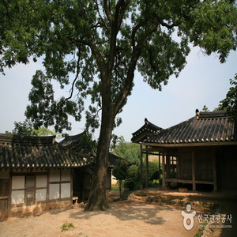
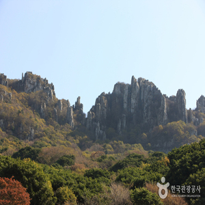
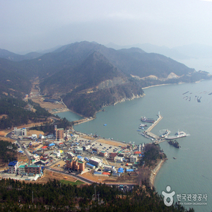

A must-visit place
just for its meaning alone
-

1
Haenam Yoon’s Nokwudang
At the Gosan Yun Seon-do site, about 4km south of Haenam-eup, there is Nokwudang, the head family of the Haenam Yun clan, and a relics museum. Nokwudang is the old house of Gosan Yun Seon-do, and is the largest and oldest remaining private house in Jeollanam-do. There are several gatehouses centered on the main building and sarangchae, which form a ㅁ shape and surround the courtyard. Beyond the wall behind the house is Chuwondang (Jegak), and to the east of it there is a shrine to Eochoeungong Yun Hyo-jeong and Yun Seon-do, important ancestors of the Haenam Yun clan.
-

2
Dalmasan Mountain and Mihwangsa Temple
Dalmasan Mountain is a mountain that rises with a long rocky ridge towards the southern end of Haenam-gun. Sanbaek, which reaches Dakgoljae, where National Highway 13, which connects to Wando via Duryunsan Mountain and Daedunsan Mountain, passes, quickly changes its appearance into a rocky hill as it passes over a mound-like mountain ridge. Mihwangsa Temple is an ancient temple that supports the theory that Buddhism was introduced into Korea by sea. In the past, there were about 20 large and small temples, and Daeungjeon Hall is Treasure No. 947 and is an excellent building in terms of its scale and sophistication.
-

3
Land's End Tourist Site
Songhori Galdu Village, located at the end of the Korean Peninsula, has a spectacular view of the Dadohae seen from the observatory on top of Sajabong Peak at 34 degrees 17 minutes 38 seconds north latitude. Especially on clear days, Jeju Island's Hallasan Mountain can be seen dimly nearby, and forms a beautiful harmony with various islands in the South Sea, including Bogil Island.